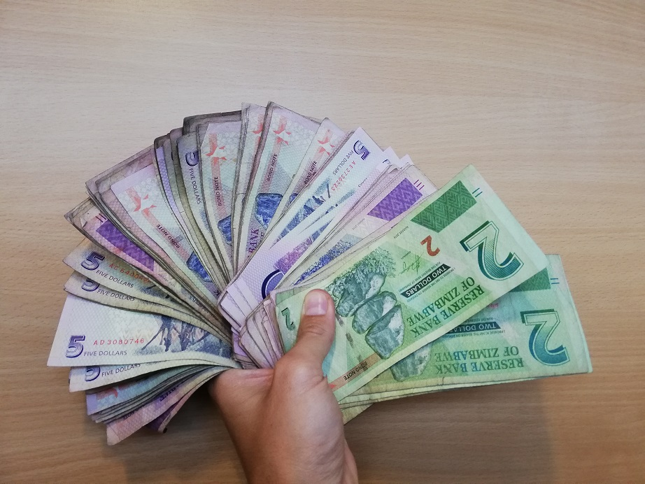
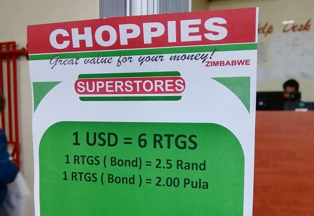

Uno de los quebraderos de cabeza del viajero que cruza fronteras es la gestión de las divisas. Es imposible establecer un código universal sobre cuál es la mejor forma de conseguir divisas locales sin incurrir en tediosas comisiones con bancos o casas de cambio.
Generalmente, en cualquier país la ecuación se resuelve cambiando divisa extranjera (dólar estadounidense generalmente) por divisa local o retirando efectivo de los cajeros nacionales. Consiste en emplear el prueba y error y ver con qué método se obtiene mejor cambio según qué tierra pisen tus pies.
Hasta aquí todo relativamente factible, siempre y cuando no te encuentres sobre suelo zimbabuense. Zimbabue tiene como moneda local una moneda que no existe para el resto del planeta, cuyo tipo de cambio no se encuentra en internet y con tan poco dinero en efectivo que el 80% de las transacciones diarias deben hacerse por transferencia.
Breves antecedentes de Zimbabue
Para entender el caos económico actual de Zimbabue, es importante conocer qué pasó en el país hace poco más de 10 años. Por aquél entonces, el país pasó por una época de hiperinflación, en la que los precios se multiplicaban a diario y era necesario imprimir cada mes billetes de cantidades imposibles de pronunciar. De este modo, el país llegó a tener en curso billetes de 100 trillones de dólares zimbabuenses equivalentes a unos pocos dólares estadounidenses.
Para que nos hagamos una idea de la problemática, aquí va un extracto del magnífico post de Diego en su blog “Fronteras” del año 2008: “Una cerveza en un bar de Harare (la capital) costaba el 4 de julio a las cinco de la tarde 100 mil millones de dólares, y 150 mil al cabo de una hora. Un billete de autobús costaba el doble por la tarde que por la mañana.” (ver link)
Tras varios años de una hiperinflación insostenible, en 2009 se decidió acabar con el dólar zimbabuense y adoptar monedas extranjeras como monedas de curso legal en el país. Así pues, los zimbabuenses empezaron a usar el dólar estadounidense, el rand sudafricano, la pula botsuanesa y el euro como monedas “locales”. El resultado fue una economía más estable, pese a que perdieron el poder de disponer una moneda propia.
Hace unos años, el gobierno decidió volver a imprimir una nueva moneda, llamada comúnmente “Bond”, aunque algunos vuelven a llamarla “dólar zimbabuense”. Es en este punto, en el que la economía vuelve a tornarse compleja e inestable.
El caos del Bond
El Bond nació de forma unilateral por parte del gobierno y el banco de Zimbabue, quienes decidieron acuñar una nueva divisa cuyo valor sería el mismo que el dólar americano. Esa nueva moneda en realidad no es una moneda reconocida por los mercados internacionales con lo que únicamente tiene validez en el mercado local.
En el momento en el que aparece el Bond, las cuentas de los bancos nacionales cuyos importes estaban en dólares estadounidenses pasaron a ser de la noche al día Bonds. Con grandes restricciones para cambiar esos nuevos Bonds en divisa extranjera.
Imagínate que un día te despiertas y decides coger todos tus billetes del monopoly y decir que eso a partir de ahora equivale a dólares estadounidenses. Pues eso hicieron, y todos nuestros ahorros pasaron a ser simplemente un número en una moneda que no existía pero que nos decían que en realidad eran dólares.
La inestabilidad en el país y los fantasmas de la hiperinflación del pasado conllevaron una progresiva devaluación del Bond situándolo durante varios meses en una tasa 1/3. Es decir, 3 bonds equivalían a 1$. En este momento, la gente ya había perdido 2/3 de sus ahorros.
Parece que la presente situación se asemeja a la de hace 10 años, pero en realidad es peor. En el contexto actual hay que añadir que los bancos no dan efectivo debido a que se han imprimido muy pocos billetes de Bond y, además, los ciudadanos no tienen manera de comprar divisa extranjera, más estable, puesto que su moneda no figura en los mercados internacionales. Aunque tuvieran efectivo, únicamente podrían comprar otras monedas en el mercado negro, con tasas de cambio muy desfavorables.

¿Cómo funciona un país sin efectivo?
En nuestros primeros días en el país nos sorprende que somos prácticamente los únicos que tenemos Bonds en efectivo. Pese a que todos los precios en los comercios están en Bonds, en la mayoría de ellos se puede pagar en divisa extranjera.
En nuestra entrada al país cambiamos dólares estadounidenses a 4 Bonds. Nada más cruzar la frontera, el primer supermercado nos deja pagar en dólares aplicando un tipo de cambio de 6, es decir, si pagamos en Bonds, la compra se encarece automáticamente en un 30%. De modo que pagamos en USD. Han transcurrido 30 minutos desde nuestra entrada y parece que nuestros bonds han perdido un 30% de su valor. Nuestra primera reacción fue pensar que nos habían timado en la frontera, pero el caos es tal, que nadie sabe qué cambio es el bueno.
Proseguimos nuestro viaje y observamos que, según la ciudad donde te encuentres o comercio donde compres, el tipo de cambio puede variar entre 3 y 8. Nuestras tarjetas internacionales son inservibles en el país, ni para pagar en comercios ni para retirar dinero de los cajeros. Los cajeros están directamente apagados y con un mensaje en pantalla indicando que no están operativos.
La gente local tiene muchas dificultades para acceder al dinero en efectivo. En sus cuentas bancarias pueden tener tantos bonds como hayan ahorrado, pero no los pueden retirar. En su defecto, sí que pueden transferirlo entre cuentas. De este modo, los pagos se realizan mediante transferencias a través de Eco-cash, un servicio de pago e intercambio de dinero a través del teléfono móvil. Obviamente, toda transacción conlleva una comisión. La conclusión de todo este embrollo es que la gran beneficiaria de este caos económico es la empresa Eco-cash.

Atascos en la cuidad
En nuestro paso por Harare, la capital, nos topamos con largas colas de coches esperando para repostar en las gasolineras. Parece que se prevé un incremento del 100% en el precio del combustible y la gente ha salido a llenar sus depósitos, garrafas y cualquier recipiente en el que almacenar fuel.
Las colas estos días no son para tanto… deben ser de unas pocas horas. Hace unos meses, cuando hubo un incremento similar, las colas para repostar eran de 2 o 3 kilómetros. La gente pagaba a otra gente para que hiciera la cola por ellos durante los 2 o 3 días que tardaban en hacerla. La ciudad estaba colapsada por las colas. Desde entonces, guardo unos litros en casa por si acaso.
En las colas de las gasolineras se vive una gran confusión, acompañamos a una amiga a repostar y el caos en la gasolinera es absoluto. Dos largas colas de unos 500 metros cada una concluyen en un pelotón de coches a las puertas de los surtidores. Bajamos del coche para preguntar si alguien sabe si la gasolinera sigue abierta y suministrando fuel, pero nadie consigue decirnos nada claro. La mayoría de sus empleados se encuentran dentro de las oficinas contando enormes fajos de billetes, y los que están fuera nos dicen que no está abierta, que volvamos mañana. Al mismo tiempo, otros empleados rellenan tímidamente los depósitos de los clientes más insistentes. Numerosos grupos de gente rodean la gasolinera, con la incertidumbre de si lo mejor será esperar o marchar en busca de otra gasolinera. A riesgo de agotar esos preciados últimos litros del depósito para llegar a otra gasolinera con una situación incluso peor.
El incremento del precio del combustible es sólo el principio de las colas. Esas colas no tardan en extenderse a los supermercados de la zona. La relación del precio de los productos con el precio del combustible es tan directa que la gente sabe bien que no tardará en llegar un incremento similar en el precio del arroz, maíz, azúcar y otros productos necesarios para el día a día.

Largas colas a la entrada de una gasolinera en Harare, la capital. Los empleados se ayudan de grandes neumáticos para evitar el colapso total provocado por la entrada masiva de vehículos
Comprar para ahorrar
Durante los días de mayor paranoia colectiva sobre el cambio, los supermercados se abarrotan de gente comprando productos de primera necesidad. Colas kilométricas inundan los pasillos. La gente espera pacientemente con su móvil en la mano, certeros de que todo producto comprado hoy no solo es un ahorro, sino casi una inversión si la situación se agrava.
La gente con Bonds en efectivo directamente no hace cola, puesto que siempre hay alguien en primera posición dispuesto a pagar con el móvil la compra del que tuviera efectivo a fin de obtener unos Bonds físicos. No olvidemos que existe mucho comercio informal en el país, donde sólo se puede pagar en efectivo, con lo que, pese a que los Bonds puedan perder su valor, es importante disponer de efectivo para ese tipo de productos, mucho más económicos que en las grandes cadenas de supermercados.
En unos días celebro el cumpleaños de mi hija y si no compro ahora no creo que pueda comprar nada en 3 días. Nosotros cobramos en bonds y los salarios no se incrementan. Los precios están multiplicándose semanalmente. Si pudiera, me hubiera largado de aquí hace tiempo, pero es imposible conseguir divisa extranjera. Estamos atrapados.
Sorprende ver las cajas de los supermercados completamente vacías. Como mucho, hay algún billete de 2 o 5 bonds y un puñado de monedas. Los que nos vemos obligados a pagar en efectivo recibimos el cambio en bonds, dólares o en caramelos. Según lo que disponga el cajero o cajera en ese momento.

hdr
La otra cara de la moneda
Dejando de lado su economía imposible, Zimbabue es uno de los países con mayor atractivo del África sub-sahariana. Su gente es de las más amables que hemos encontrado en el camino, hospitalarias y curiosas sobre como es el mundo más allá de sus fronteras. Intrigados sobre qué piensa el foráneo de su país.
Desde las tierras altas en el este del país hasta las cataratas Victoria, el país es un parque natural en sí mismo. Bañado por inmensas sabanas repletas de animales salvajes y una red ferroviaria que teletransporta al viajero a otra época. Los atractivos del país son infinitos, con acceso relativamente fácil en transporte público o incluso haciendo autostop. Un lugar perfecto para mochileros sin prisa.
Miramos al futuro con un optimismo relativo. El problema en la economía del país es una realidad, como también lo es su potencial turístico. Tal vez aprender de los errores del pasado es la fórmula para su recuperación.


")


Muy interesante, como todo lo que estáis escribiendo en los post. Seguimos viajando con vosotros.
Para cuando el próximo??
Gracias! Pues tenemos algunos temas en cola, solo nos falta encontrar tiempo y, lo que es más importante, inspiración!
Menudo caos!!! Es increíble que puedan vivir en esa incertidumbre constante. Menos mal que sois unos cracks de las finanzas.
Si! Y todavía más, es admirable su paciencia frente a una situación tan adversa.
Qué maravillosamente explicado!
*maravillosamente bien, quería decir!!
Gracias! Este post ha sido un reto. Me alegro que te haya gustado!
Es muy interesante el post! Una situación muy dificil de explicar, pero gracias al post es muy fácil de entender! os queremos! Quiero más!!!
Gracias!
Surrealista. Lo de los bonds parece la última de Black Mirror.
Totalmente, ver (o leer) para creer!
Llego un poco tarde, pero es que hasta ahora mismo no había caído aquí con un teclado en las manos.
Había leído algunas cosas sobre hiperiflacciones y confieso que me divertían las curiosidades que estas situaciones absurdas generan: la típica foto del barrendero barriendo billetes de la calle, la escena de la familia echando billetes a la lumbre o empapelando las paredes con ellos, los fajos de kilos y kilos de billetes que todos juntos apenas suman 1 dólar, y esas escaladas locas de precios en los comercios donde los precios se actualizan cada hora y se doblan cada día.
Lo que me parece increíble es que esta situación se pueda prologar en el tiempo, o cíclicamente, como es el caso de Zimbaue. Es increíble como la mala gestión puede desembocar en una situación así de absurda y que nadie sea capaz de hacer nada para detenerla tras años. Seguramente este tipo de situaciones sean las que más ponen frente por frente y de manera más directa a la población con sus gobernantes.
Cuando uno se va al día a día, las situaciones graciosas no lo son tanto para la población que las sufre y vivir una realidad así tiene que suponer un auténtico calvario para cualquiera,… seguramente para el grueso de la población, y no para los malos gestores que son culpables.
Siempre, en cualquier catástrofe del tipo que sea, en este caso económica, acaban siendo los más vulnerables los que pagan los más altos precios.
Seguid escribiendo! Me voy rápido que he quedado con Xarli 🙂
Más tarde llego yo! Parece que algunos gobiernos no aprenden o no quieren hacerlo, de ahí que sus pueblos estén condenados a vivir a expensas de la mala gestión de sus políticos.
En en caso zimbabuense, lo sorprendente es que la reacción en la calle es más de resignación que de crispación. Algunos nos decían que lo mejor es esperar a que petase de nuevo y así volver a disponer de divisas extranjeras.
Habrá que seguir de cerca como evoluciona la economía de Zimbabue en los próximos meses, cruzando los dedos para que el pueblo no vuelva a sufrir los estragos de la hiperinflación.
Un abrazo!